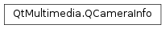

QCameraInfo¶
Synopsis¶
Functions¶
- def
__eq__(other) - def
__ne__(other) - def
description() - def
deviceName() - def
isNull() - def
orientation() - def
position()
Static functions¶
- def
availableCameras([position=QCamera.UnspecifiedPosition]) - def
defaultCamera()
Detailed Description¶
The
PySide2.QtMultimedia.QCameraInfoclass provides general information about camera devices.
PySide2.QtMultimedia.QCameraInfolets you query for camera devices that are currently available on the system.The static functions
PySide2.QtMultimedia.QCameraInfo.defaultCamera()andPySide2.QtMultimedia.QCameraInfo.availableCameras()provide you a list of all available cameras.This example prints the name of all available cameras:
QList<QCameraInfo> cameras = QCameraInfo::availableCameras(); foreach (const QCameraInfo &cameraInfo, cameras) qDebug() << cameraInfo.deviceName();A
PySide2.QtMultimedia.QCameraInfocan be used to construct aPySide2.QtMultimedia.QCamera. The following example instantiates aPySide2.QtMultimedia.QCamerawhose camera device is named ‘mycamera’:QList<QCameraInfo> cameras = QCameraInfo::availableCameras(); foreach (const QCameraInfo &cameraInfo, cameras) { if (cameraInfo.deviceName() == "mycamera") camera = new QCamera(cameraInfo); }You can also use
PySide2.QtMultimedia.QCameraInfoto get general information about a camera device such as description, physical position on the system, or camera sensor orientation.QCamera myCamera; QCameraInfo cameraInfo(myCamera); if (cameraInfo.position() == QCamera::FrontFace) qDebug() << "The camera is on the front face of the hardware system."; else if (cameraInfo.position() == QCamera::BackFace) qDebug() << "The camera is on the back face of the hardware system."; qDebug() << "The camera sensor orientation is " << cameraInfo.orientation() << " degrees.";See also
-
class
PySide2.QtMultimedia.QCameraInfo([name=QByteArray()])¶ -
class
PySide2.QtMultimedia.QCameraInfo(camera) -
class
PySide2.QtMultimedia.QCameraInfo(other) Parameters: - other –
PySide2.QtMultimedia.QCameraInfo - name –
PySide2.QtCore.QByteArray - camera –
PySide2.QtMultimedia.QCamera
Constructs a camera info object from a camera device
name.If no such device exists, the
PySide2.QtMultimedia.QCameraInfoobject will be invalid andPySide2.QtMultimedia.QCameraInfo.isNull()will return true.Constructs a camera info object for
camera.You can use it to query information about the
cameraobject passed as argument.If the
camerais invalid, for example when no camera device is available on the system, thePySide2.QtMultimedia.QCameraInfoobject will be invalid andPySide2.QtMultimedia.QCameraInfo.isNull()will return true.Constructs a copy of
other.- other –
-
static
PySide2.QtMultimedia.QCameraInfo.availableCameras([position=QCamera.UnspecifiedPosition])¶ Parameters: position – PySide2.QtMultimedia.QCamera.PositionReturn type: Returns a list of available cameras on the system which are located at
position.If
positionis not specified or if the value isQCamera.UnspecifiedPosition, a list of all available cameras will be returned.
-
static
PySide2.QtMultimedia.QCameraInfo.defaultCamera()¶ Return type: PySide2.QtMultimedia.QCameraInfoReturns the default camera on the system.
The returned object should be checked using
PySide2.QtMultimedia.QCameraInfo.isNull()before being used, in case there is no default camera or no cameras at all.
-
PySide2.QtMultimedia.QCameraInfo.description()¶ Return type: unicode Returns the human-readable description of the camera.
-
PySide2.QtMultimedia.QCameraInfo.deviceName()¶ Return type: unicode Returns the device name of the camera
This is a unique ID to identify the camera and may not be human-readable.
-
PySide2.QtMultimedia.QCameraInfo.isNull()¶ Return type: PySide2.QtCore.boolReturns true if this
PySide2.QtMultimedia.QCameraInfois null or invalid.
-
PySide2.QtMultimedia.QCameraInfo.__ne__(other)¶ Parameters: other – PySide2.QtMultimedia.QCameraInfoReturn type: PySide2.QtCore.boolReturns true if this
PySide2.QtMultimedia.QCameraInfois different fromother.
-
PySide2.QtMultimedia.QCameraInfo.__eq__(other)¶ Parameters: other – PySide2.QtMultimedia.QCameraInfoReturn type: PySide2.QtCore.boolReturns true if this
PySide2.QtMultimedia.QCameraInfois equal toother.
-
PySide2.QtMultimedia.QCameraInfo.orientation()¶ Return type: PySide2.QtCore.intReturns the physical orientation of the camera sensor.
The value is the orientation angle (clockwise, in steps of 90 degrees) of the camera sensor in relation to the display in its natural orientation.
You can show the camera image in the correct orientation by rotating it by this value in the anti-clockwise direction.
For example, suppose a mobile device which is naturally in portrait orientation. The back-facing camera is mounted in landscape. If the top side of the camera sensor is aligned with the right edge of the screen in natural orientation, the value should be 270. If the top side of a front-facing camera sensor is aligned with the right of the screen, the value should be 90.
-
PySide2.QtMultimedia.QCameraInfo.position()¶ Return type: PySide2.QtMultimedia.QCamera.PositionReturns the physical position of the camera on the hardware system.
© 2018 The Qt Company Ltd. Documentation contributions included herein are the copyrights of their respective owners. The documentation provided herein is licensed under the terms of the GNU Free Documentation License version 1.3 as published by the Free Software Foundation. Qt and respective logos are trademarks of The Qt Company Ltd. in Finland and/or other countries worldwide. All other trademarks are property of their respective owners.